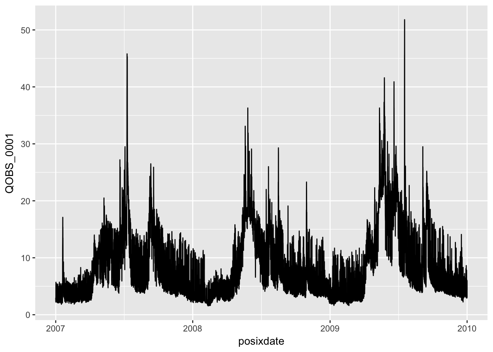
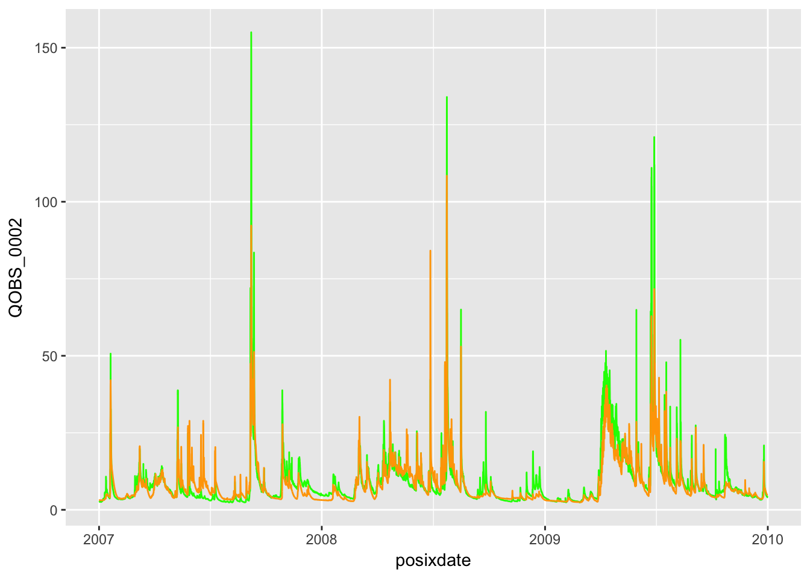
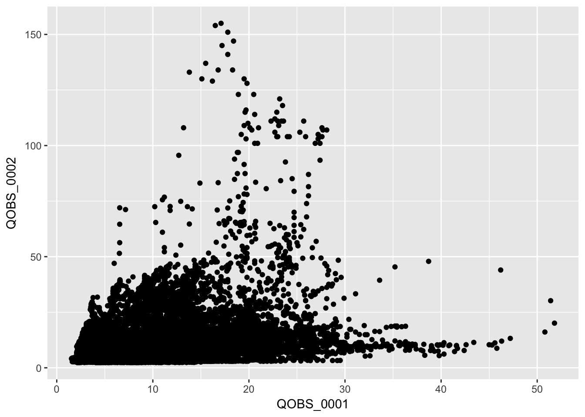
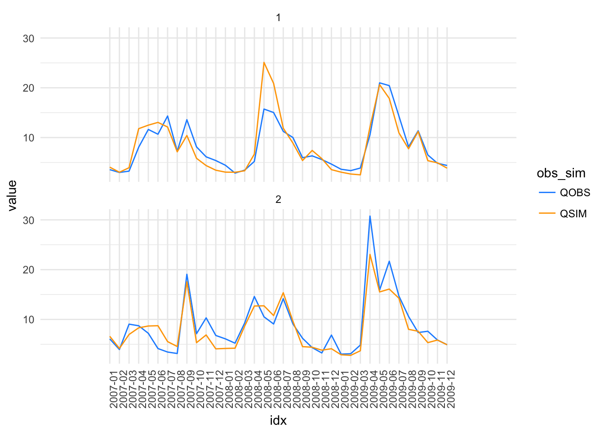
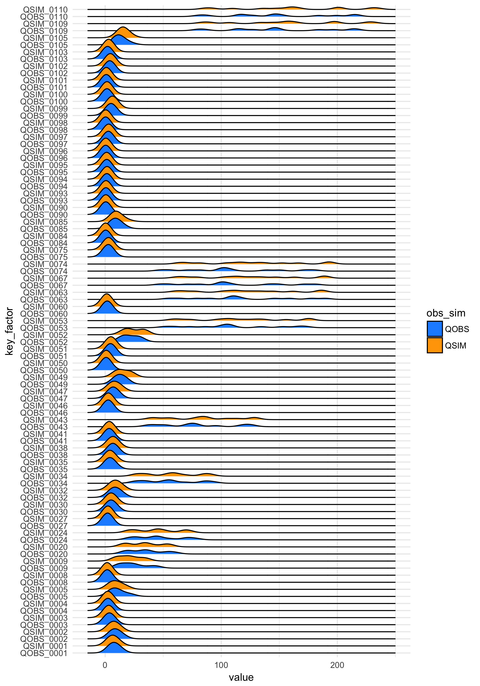

Chapter 3 Aggregate according to time
In hydrology it is often useful to summarise the data respect to a given time dimension. In visCOS this can be done by using the aggregate_time function. The function takes COSERO data.frame and aggregates them according to a chosen time dimension. Note, that the name of the dimension can be specified via the options.
coscos::libraries(visCOS, ggplot2, dplyr, magrittr)Daily runoff aggregation:
cosdata <- coscos::viscos_example()
runoff_aggregate_dd <- aggregate_time(cosdata, "dd") %>%
dplyr::mutate(obs_sim = substr(key,1,4),
basin = substr(key,6,9) %>% as.integer(.))
# plot data:
ggplot(runoff_aggregate_dd) +
geom_line(aes(x = dd, y = value, col = obs_sim)) +
scale_colour_manual(values = c(viscos_options("color_o"),
viscos_options("color_s"))) +
facet_wrap( ~ basin,ncol = 1) +
theme_minimal()
Monthly runoff aggregation:
runoff_aggregate_mm <- aggregate_time(cosdata, "mm") %>%
dplyr::mutate(obs_sim = substr(key,1,4),
basin = substr(key,6,9) %>% as.integer(.))
# plot data:
ggplot(runoff_aggregate_mm) +
geom_line(aes(x = mm, y = value, col = obs_sim)) +
scale_colour_manual(values = c(viscos_options("color_o"),
viscos_options("color_s"))) +
scale_x_discrete(limits = runoff_aggregate_mm$mm) +
facet_wrap( ~ basin) +
theme_minimal()
Yearly runoff aggregation:
runoff_aggregate_yyyy <- aggregate_time(cosdata, "yyyy") %>%
dplyr::mutate(obs_sim = substr(key,1,4),
basin = substr(key,6,9) %>% as.integer(.))
# plot data:
ggplot(runoff_aggregate_yyyy) +
geom_line(aes(x = yyyy, y = value, col = obs_sim)) +
geom_point(aes(x = yyyy, y = value, col = obs_sim)) +
scale_colour_manual(values = c(viscos_options("color_o"),
viscos_options("color_s"))) +
facet_wrap( ~ basin) +
scale_x_discrete(limits = runoff_aggregate_yyyy$yyyy,
labels = abbreviate) +
theme_minimal()
Yearly and monthly runoff aggregation:
runoff_aggregate_yyyymm <- aggregate_time(cosdata, c("yyyy","mm")) %>%
dplyr::mutate(obs_sim = substr(key,1,4),
basin = substr(key,6,9) %>% as.integer(.),
idx = yyyy + mm/12) # a small hack to get a unique identifier
# plot data:
ggplot(runoff_aggregate_yyyymm) +
geom_line(aes(x = idx, y = value, col = obs_sim)) +
scale_colour_manual(values = c(viscos_options("color_o"),
viscos_options("color_s"))) +
scale_x_discrete(limits = runoff_aggregate_yyyymm$idx,
labels = runoff_aggregate_yyyymm$posixdate) +
facet_wrap( ~ basin,ncol = 1) +
theme_minimal() +
theme(axis.text.x = element_text(angle = 90, hjust = 1))
aggregate_time is useful to get a quick overview. However, for larger basins the facetting can become confusing. It is then useful to save the data as larger pictures and/or arange them into one plot. The latter can, for example, be done by using using the ggjoy package:
library("ggjoy") # devtools::install_github("clauswilke/ggjoy")
big_cosdata <- data.table::fread("path_to_your_data") %>%
coscos::cook_cosdata(your_data)
runoff_aggregate_mm <- aggregate_time(big_cosdata, "mm") %>%
dplyr::mutate(obs_sim = substr(key,1,4),
basin = substr(key,6,9) %>% as.integer(.) )
runoff_aggregate_mm$key_factor = factor(runoff_aggregate_mm$key,
levels = unique(runoff_aggregate_mm$key))
# plot data:
ggplot(runoff_aggregate_mm, aes(x=value, y= key_factor, height = ..density.., fill = obs_sim)) +
geom_joy() +
scale_fill_manual(values = c("dodgerblue","orange")) +
theme_minimal()
joy plot
3.1 Code: aggregate_time
aggregate_time is basically wrapper for coscos::clump. Here is the code:
#' Time Aggregation
#'
#' Aggregates the COSERO data.frame (\code{cosdata}) according to the
#' timely resolution defined via \code{aggregation}. Possible
#' resolution-choices are \code{'yyyy'} - year, \code{'mm'} - month and
#' \code{'dd'} - day and combinations thereof.
#'
#' @param cosdata The strictly defined data format (\code{cosdata}) used
#' within \pkg{viscos}
#' @param aggregation A string that defines the resolution of the aggregation.
#'
#' @import coscos
#' @import pasta
#' @importFrom tidyr gather_
#' @export
aggregate_time <- function(cosdata,
key = "mm",
.funs = base::mean,
opts = coscos::viscos_options()) {
if (class(key) != "character")
stop("key must be a chracter. It currently is:" %&&% class(key))
le_data <- coscos::cook_cosdata(cosdata)
le_aggr <- coscos::clump(le_data, key = key, .funs = .funs)
le_aggr[opts$name_COSposix] <- le_data[[opts$name_COSposix]] %>%
coscos::clump_posix(.,key = key)
le_names <- names(le_aggr)
# melt the data in a tidy format:
selected_cols <- (opts$name_o %|% opts$name_s) %>%
grepl(.,le_names, ignore.case = TRUE) %>%
le_names[.]
tidy_aggr <- tidyr::gather_(le_aggr,
key_col = c("key"),
value_col = "value",
gather_cols = selected_cols)
return(tidy_aggr)
}
# functions to extrapolte additional information:
# remove_basin_nums <- function(basin_names) {
# basin_names %>%
# gsub(opts$name_o %&% ".*", opts$name_o , ., ignore.case = TRUE) %>%
# gsub(opts$name_s %&% ".*", opts$name_s, ., ignore.case = TRUE)
# }
# remove_basin_names <- function(basin_names) {
# as.integer(gsub("\\D","",basin_names))
# }